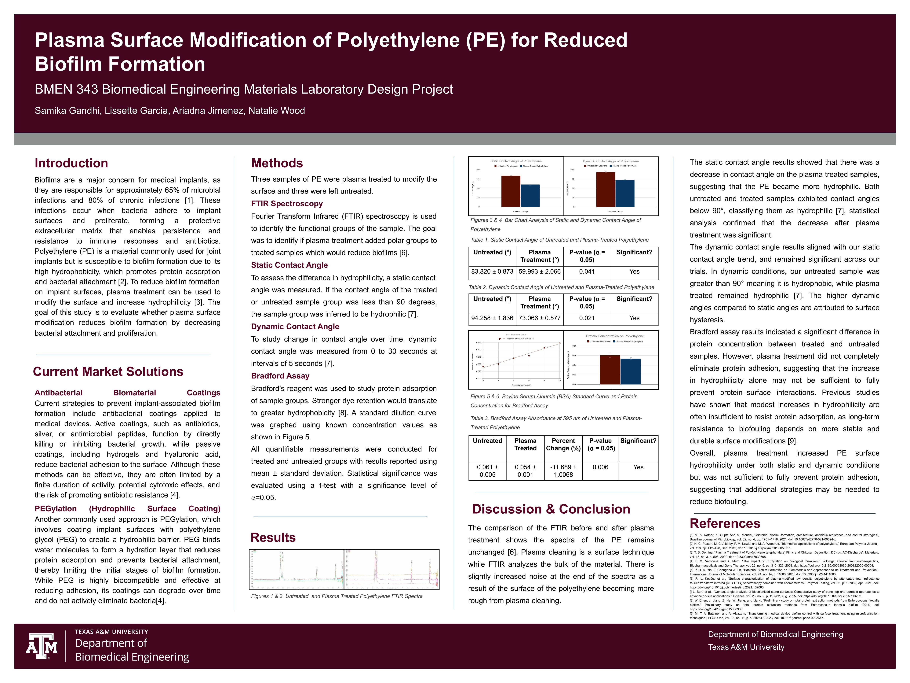
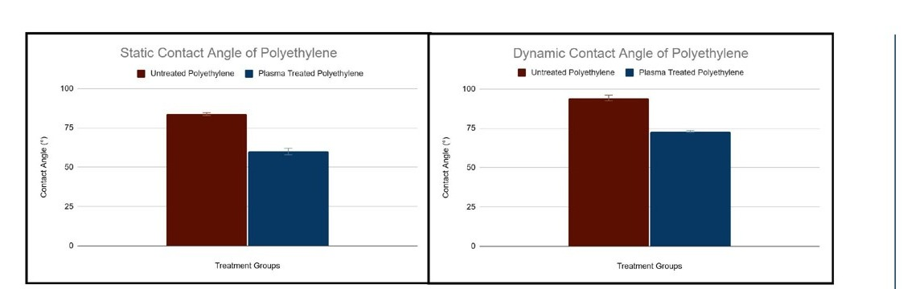

Biofilms are responsible for roughly 65% of microbial infections and 80% of chronic infections associated with medical implants. Polyethylene (PE), a material widely used in hip and joint implants, is especially prone to this: its high hydrophobicity promotes protein adsorption, which gives bacteria something to grab onto and start colonizing.
The aim of this project was to test whether plasma surface treatment, a purely physical modification, no drugs or coatings involved, could make PE more hydrophilic and, in turn, reduce the protein adsorption that kicks off biofilm formation.
Six PE samples were split into two groups, three plasma-treated, three left untreated, and run through four tests to characterize the surface change and its downstream effect on protein adsorption.
Fourier Transform Infrared spectroscopy identifies the functional groups present on a sample's surface. The goal here was to see whether plasma treatment added new polar functional groups, the chemical signature that would explain a hydrophilicity shift, and confirm whether the change was a true surface-chemistry effect versus a bulk-material change.
Spectra were collected for both untreated and plasma-treated samples across the standard IR range, and the two sets were directly overlaid and compared. A shift or emergence of new absorbance peaks (particularly in the polar functional group region) would indicate successful chemical modification of the surface.
The static contact angle of a water droplet is the most direct, standard readout of a surface's hydrophobicity or hydrophilicity, a contact angle below 90° classifies the sample as hydrophilic. This is the baseline test that tells you whether plasma treatment moved the needle at all.
A droplet of water was placed on each sample and the resting contact angle was measured with a goniometer, comparing plasma-treated against untreated groups. Measurements were repeated across all samples in each group and reported as mean ± standard deviation, then evaluated for statistical significance with a t-test at α = 0.05.
A single static measurement only captures wettability at one instant. Tracking contact angle as it changes over time reveals surface hysteresis, how the surface behaves under more realistic, dynamic wetting conditions rather than a single snapshot, which matters for a device that will sit in a wet physiological environment.
Contact angle was measured from 0 to 30 seconds at 5-second intervals for each sample, generating a time-course for both the treated and untreated groups. The trend across intervals was compared to see whether treated samples stayed consistently more hydrophilic over time, or converged back toward the untreated baseline.
Contact angle tells you about surface energy, but not what actually happens with proteins, the real precursor to bacterial attachment. The Bradford assay directly quantifies protein (BSA) adsorption: stronger dye retention corresponds to greater protein binding, which was the study's real endpoint of interest.
A standard BSA dilution curve was generated from known concentrations to calibrate the assay. Treated and untreated samples were then incubated with protein, developed with Bradford's reagent, and read at 595 nm absorbance. Protein concentration was back-calculated from the standard curve and compared between groups using mean ± standard deviation and a t-test at α = 0.05.

Plasma treatment significantly dropped the contact angle in both static (83.8° → 60.0°) and dynamic (94.3° → 73.1°) conditions, both statistically significant (p = 0.041 and p = 0.021). The surface genuinely became more hydrophilic. FTIR spectra, however, stayed essentially unchanged before and after treatment, confirming that plasma is a true surface effect, it doesn't alter the bulk material.
The Bradford assay told a more complicated story: protein concentration dropped ~11.7% after treatment (p = 0.006), real, but modest. Plasma treatment made the surface measurably more hydrophilic without coming close to eliminating protein adsorption.
Plasma treatment works, it's a real, statistically significant, drug-free way to increase PE hydrophilicity. But hydrophilicity alone isn't the full biofilm story: modest surface energy changes weren't enough to meaningfully block protein adsorption, meaning plasma treatment alone likely isn't sufficient as a stand-alone anti-biofilm strategy. It's a piece of the puzzle, not the whole solution, durable, longer-lasting surface modifications would likely be needed alongside it.
The complete research poster, introduction, current market solutions, methods, results, and full statistical analysis.